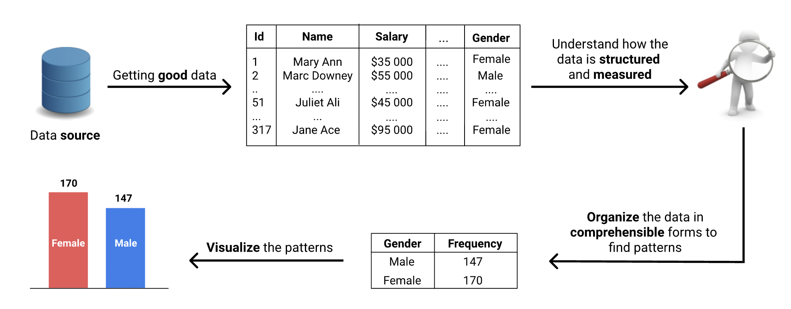
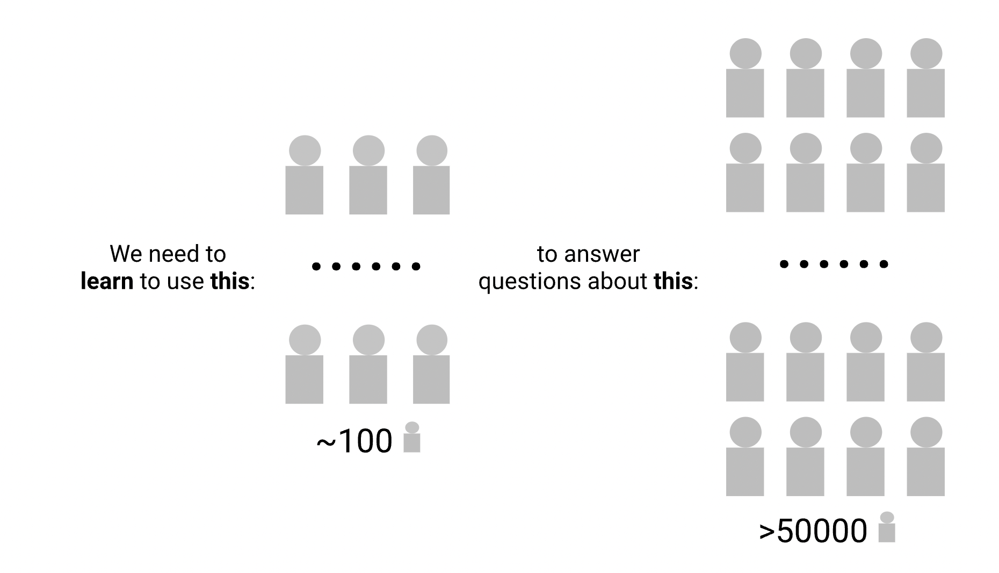
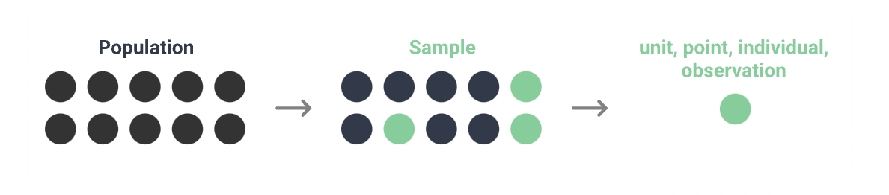
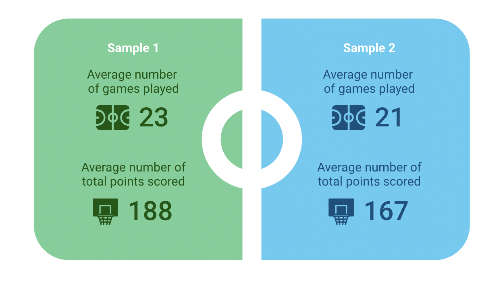
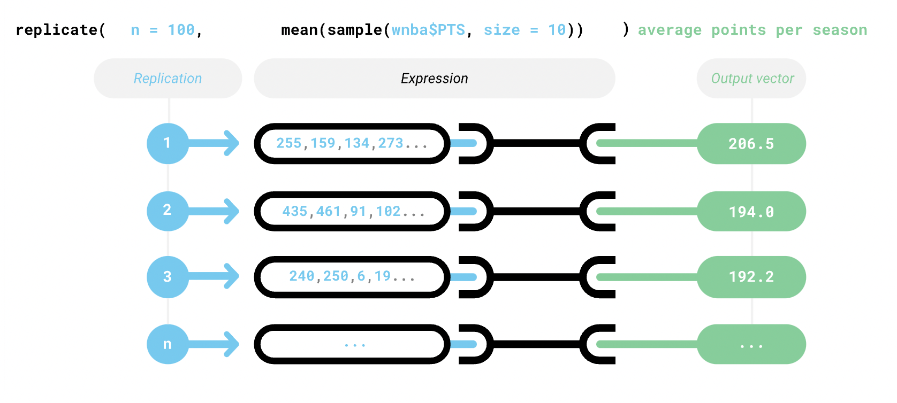
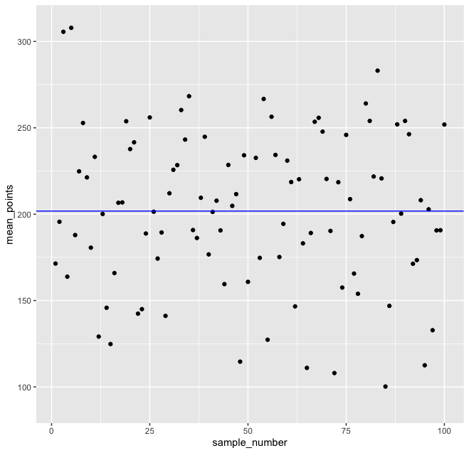

Update: Homework
- You will get 0 point from now on:
- use my name
- did not submit both R Markdown and html files
- read.csv()
- copy others' code
- Question 2: ask how to parse
graduation %>%
mutate(
across(c(`Total Grads - % of cohort`,
`Dropped Out - % of cohort`), as.numeric)
)
But then, Question 5, use the parse function
does not make any sense
The difference between a population and a sample is one of the foundational concepts in statistics
Simple random sampling allows us to select data from a population when performing statistical analysis
Knowing how and what to sample is very useful in statistical analysis

- Let's imagine that we're managing a small tech company with seven employees
- As the company continues to grow, analyzing data becomes nearly impossible
- Suppose: we've recently made a company-wide change that made our employees' jobs more difficult
- Now we want to determine if this change has negatively affected our employees
- Let's say we have over 50,000 employees. How would you do?
- You may run a survey to collect data and answer the question
- Surveying over 50,000 employees would be time-consuming and expensive
- so you will survey approximately 100 people to get an answer

- In statistics, the set of all individuals relevant to a particular statistical question is a population
- For the previous question, everyone working for the company was relevant
- So the population in this case consisted of all the employees
- A smaller group selected from a population is a sample
- When we select a smaller group from a population, we're sampling
- Whether a set of data is a sample or a population depends on the question
- In the case of a sample, you'll often see the following terminology used interchangeably:
- sample unit, sample point, sample individual, or sample observation

Now, we'll begin working with a real-world dataset. The dataset is about basketball players in the WNBA, and it contains general information about players, along with their metrics for the 2016-2017 season
- The population data would be the first best
- In practice, that's not always possible because the populations of interest usually vary from large to extremely large
- We can solve these problems by sampling from the population that interests us
- although this isn't as accurate as working with the entire population
- Suppose the average number of games played per season is 24 for all players in the WNBA, and the average number of total points scored per season is 202

- A sample is an incomplete dataset for the question we're trying to answer
- There's almost always some difference between the metrics of a population and the metrics of a sample
- We can see this difference as an error, and because it's the result of sampling, we call it sampling error
- A metric specific to a population is a parameter, while one specific to a sample is a statistic
- Another way to think of the concept of the sampling error is as the difference between a parameter and a statistic:
- sampling error = parameter - statistic
- Let's take a random sample from the dataset and calculate the difference between our sample (statistic) and the population (parameter)
set.seed(1)
parameter <- max(wnba$Games_Played)
parameter
[1] 32
sample_data <- sample(wnba$Games_Played, size = 30)
statistic <- max(sample_data)
[1] 31
sampling_error <- parameter - statistic
sampling_error
[1] 1
- When we sample, we want to minimize the sampling error as much as possible because we want our sample to represent the population as closely as possible
- Suppose you want to know the average height of Brandeis student
- measuring location matters?
- In statistical terms, we want our samples to be representative of their corresponding populations
- the more representative a sample is, the smaller the sampling error
- To make our samples representative, we can try to give every individual in the population an equal chance at being selected in our samples
- In our previous exercise, we used the sample() function to sample randomly
- performs simple random sampling by taking a sample of the specified size from the elements of x
- default argument for the function is replace = FALSE
- We can also use this function to randomly select columns when we have a table instead of a single vector
- How do we scale up our analysis to replicate 100 random samples?
- To generate numerous random samples, we'll use the base R replicate() function
- replicate(n, expr)
- n is the number of replications (random samples)
- expr is a function call or formula
- replicate(n = 100, mean(wnba$PTS, size = 10)))


- Because sample means vary a lot around the population mean, there's a good chance we get a sample that isn't representative of the population
- Simple random sampling isn't a reliable sampling method when the sample size is small
- Because sample means vary a lot around the population mean, there's a good chance we'll get an unrepresentative sample
- When we do simple random sampling, we should try to get as large a sample as possible
- A large sample decreases the variability of the sampling process, which, in turn, decreases the chances that we'll get an unrepresentative sample